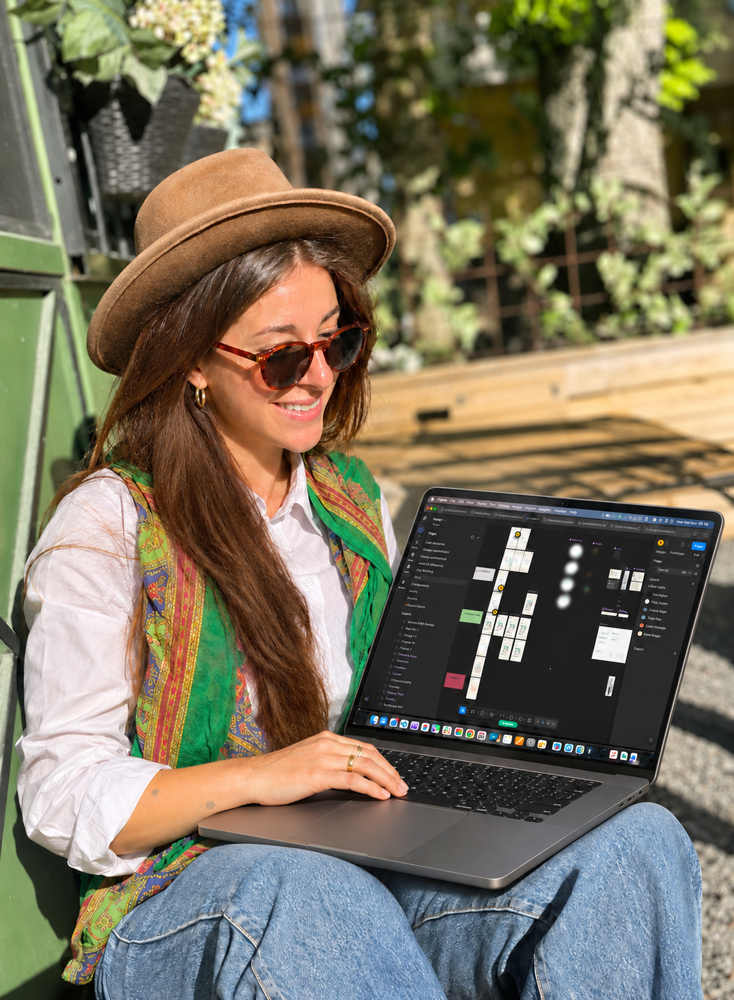

UX/UI design & frontend development
I enjoy understanding what people need, shaping the experience, and building the interface. Working across UX and frontend helps me stay connected to both how a product feels and how it works.
Frontend Developer · UX/UI
I enjoy understanding how people use a product, shaping an experience around what they need, and building the frontend that brings it to life.
View selected workSelected Work

About
I enjoy getting to know the people behind a product and turning what I learn into interfaces that are clear, thoughtful, and enjoyable to use.
I balance clear planning with creative exploration, bringing users and stakeholders into the process throughout. The feedback helps me decide what to refine next and keeps each iteration focused on making the product more useful.
Get in touchWhat I Bring
I enjoy understanding what people need, shaping the experience, and building the interface. Working across UX and frontend helps me stay connected to both how a product feels and how it works.
I like bringing structure to collaborative work. I’ve helped teams set up practical UX processes and used Scrum to support planning, shared feedback, and steady progress.
Startup work has given me the chance to wear different hats and see products from several angles. I’ve learned to connect business needs, design decisions, and technical work as a product takes shape.